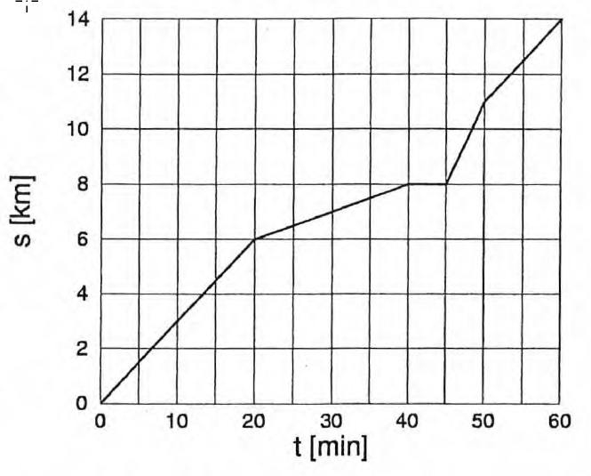
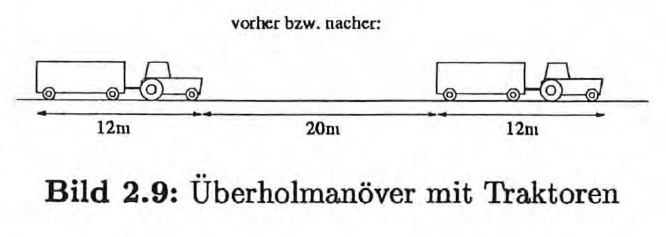

Lernziele, Zusammenfassung und Skript
Thematische Kapitelübersicht mit Verlinkungen ins Skript
Was ist der Hauptunterschied von BURIDANs Impetus-Theorie zur Aristotelischen Dynamik?
Was bedeutet eine waagrechte Linie im \(s-t-\) Diagramm?
Was bedeutet es, wenn die Kurve im \(s-t-\) Diagramm fällt?
Was bedeutet es, wenn die Kurve im \(v-t-\) Diagramm fällt?
Was bedeutet es, wenn die Kurve im \(v-t-\) Diagramm unterhalb der \(t-\)Achse liegt?
Woran erkennt man in einem \(s-t-\)Diagramm, ob eine Geschwindigkeit grösser oder kleiner ist als eine andere?
Wieso gilt die Formel \(s = vt\) für ungleichförmige Bewegungen nicht (selbst wenn Startweg und -zeit Null sind)?
Kann man bei ungleichförmiger Bewegung den in einer beliebigen Zeit \(t\) zurückgelegten Weg \(s\) nach der Formel \(s = \bar vt\) berechnen? (\(\bar v\): Durchschnittsgeschwindigkeit)
Gibt es eine eindeutige Antwort auf die Frage, wie schnell du dich im Moment bewegst?
Warum sind auf einem Lokführerfahrplan die Schnittpunkte besonders wichtig? (Ein Lolcführerfahrplan funktioniert nach dem Prinzip von Bild 2.6, nur enthält er viel mehr Linien, d.h. Züge.)
Thematische Kapitelübersicht mit Verlinkungen ins Skript

Aufgaben zum Kapitel und zusätzliches Übungsmaterial
(diese Seite)

Lernvideos und Tutorials

Lösungen zu Übungen und Kurzfragen
Welche Entfernung hat ein Blitz, wenn man den Donner \(6\,s\) später hört? (Schallgeschwindigkeit: \(c_{S} = 340\,\frac{m}{s}\))
Bild 2.8 zeigt das Weg-Zeit-Diagramm eines Radfahrers.
(a)
Welche Geschwindigkeit hat der Radfahrer \(10\,min\) bzw. \(30\,min\) nach dem Start?
(b)
Wie gross sind die grösste und die kleinste Geschwindigkeit des Radfahrers innerhalb der dargestellten Stunde?
Bild 2.8: Das \(s-t-\)Diagramm eines Radfahrers.
(c)
Wie gross ist die mittlere Geschwindigkeit über die ganze Strecke von \(14\,km\)?
| 3000m | Schwimmen | 48 min |
| 120 km | Radfahren | 2 h 47 min |
| 36 km | Laufen | 2h 17min |
Dabei soll angenommen werden, dass sich der Athlet bei jeder Disziplin mit konstanter Geschwindigkeit bewegt.
(a)
Zeichne das \(s-t-\)Diagramm. (Zeichne die ganze Bewegung in ein einziges Diagramm ein.)
(b)
Gib für jede Teilstrecke die Geschwindigkeit (in \(\frac{km}{h}\)) an. Wie gross ist die Durchschnittsgeschwindigkeit (in \(\frac{km}{h}\)) über die ganze Strecke?
(c)
Ein Boot startet \(15\,min\) nach dem Start und fährt dem Athlet mit einer Geschwindigkeit von \(18\,\frac{km}{h}\) nach. Wann und wie weit vom Start entfernt überholt es den Sportler? Löse die Aufgabe sowohl graphisch als auch rechnerisch.
Du fährst mit einem Boot einen See hinauf. Das Boot bewegt sich im Wasser mit \(18\,\frac{km}{h}\). Der See fliesst mit einer Strömungsgeschwindigkeit von \(1.5\,\frac{m}{s}\) abwärts. Der Wind weht mit der am Land gemessenen Geschwindigkeit von \(27\,\frac{km}{h}\) seeabwärts. Wie stark bläst er dir ins Gesicht?
Eine Radfahrerin fährt auf einem \(2500\,m\) langen Rundkurs mit einer Geschwindigkeit von \(33\,\frac{km}{h}\). Nach \(3.5\) Runden wird sie von einer zweiten Radfahrerin, die gleichzeitig gestartet ist, überrundet. Wie gross ist die Geschwindigkeit der zweiten Radfahrerin?
Über ein Tal hinweg führt eine \(1.25\,km\) lange Materialseilbahn (Seillänge). \(18\,0m\) unterhalb der Bergstation (dem Seil entlang gemessen) steht ein Mast. Solange sich eine der beiden Kabinen zwischen der Bergstation und dem Mast befindet, darf die Bahn nur mit \(3.5\,\frac{m}{s}\) gefahren werden, ansonsten aber mit \(5.5\,\frac{m}{s}\). Wie lange dauert eine Fahrt der Seilbahn? Zeichne das \(s-t-\) und das \(v-t-\)Diagramm. Zeichne darin auch die (in der Rechnung unberücksichtigten) Anfahr- und Bremsphasen mehr oder weniger realistisch ein.
Ein Junge und ein Mädchen machten einen Wettlauf über \(100\,Meter\). Als das Mädchen die Ziellinie überschritt, war der Junge erst \(95\,Meter\) weit gelaufen. Sie gewann also das Rennen mit \(5\,Metern\) Vorsprung. Sie wiederholten das Rennen und, um dem Jungen bessere Chancen einzuräumen, beschloss das Mädchen, \(5\,Meter\) hinter der Startlinie zu beginnen. Wenn beide mit der gleichen Geschwindigkeit wie beim ersten Rennen liefen, wer gewann dann das zweite?
Ein Zug fährt von Bern nach Zürich und
zurück. Auf der Hinfahrt hält er in Olten,
auf der Rückfahrt aber nicht. Der Fahrplan
(inkl. Bahnkilometer) sieht wie folgt aus
(\(\rightarrow\): Hinfahrt, \(\leftarrow\) Rückfahrt):
Zeichne für die gesamte Bewegung des Zuges das s-t- und das v-t-Diagramm.
Ein Traktor kann auf verschiedenen Wegund Strassentypen mit folgenden Geschwindigkeiten fahren:
\( \begin{array}{ll} \quad Strasse & 30\,\frac{km}{h} \\ \quad Feldweg\,gut & 18\,\frac{km}{h} \\ \quad Feldweg\,schlecht & 12\,\frac{km}{h} \\ \end{array} \)Für den Weg vom Hof zu einem Arbeitsort stehen zwei Routen zur Diskussion:
Vergleiche die beiden Routen nach folgenden Punkten:
(a)
Wie lange dauert die Fahrt auf jeder der beiden Routen?
(b)
Erstelle ein \(v-t-\)Diagramm, in welches du beide Bewegungen einzeichnest.
(c)
Zeichne beide Fahrten in ein \(s-t-\) Diagramm ein.
(d)
Berechne die Durchschnittsgeschwindigkeit für jede der beiden Routen.
* Zwei Bauernhöfe sind (der Strasse entlang gemessen) \(18\,km\) voneinander entfernt. Die beiden Bauern wollen Futtersäcke austauschen. Sie telefonieren einander und beschliessen, beide gleichzeitig mit ihren Traktoren loszufahren, um am Begegnungsort umzuladen. Der Traktor von Bauer A fährt \(24\,\frac{km}{h}\) schnell, jener von Bauer B hingegen \(36\,\frac{km}{h}\).
Wie lange dauert es, bis sich die beiden treffen? Wie weit sind sie dann vom Bauernhof A entfernt?
Du schreibst gerade einen 5000-seitigen Roman, der im zaristischen Russland spielt. Auf Seite 2836 beleidigt Baron Protzky die Gräfin Anabolika, worauf Graf Murksin den Baron durch einen Boten zum Duell auffordern lässt. Protzky nimmt an.
Am Morgen des 22. Novembers 1878 reiten beide um genau \(5\,Uhr\) früh los, Protzky in St. Petersburg, Murksin im \(640\,Kilometer\) entfernten Moskau. Genau um \(11\,Uhr\) mittags treffen sie sich, um sich gegenseitig zu ohrfeigen.
Weil der Wind genau von St. Petersburg nach Moskau weht, hat Protzky Rückenwind und reitet deshalb \(40\,km\frac{km}{h}\) schneller als Murksin, der gegen den Wind reitet. (Wir nehmen an, dass beide mit konstanter Geschwindigkeit reiten.)
(a)
* Wie schnell reiten die beiden (gegenüber der Landschaft)?
(b)
Angenommen die Geschwindigkeitsdifferenz kommt nur vom Luftwiderstand her, d.h. gegenüber der Luft bewegen sich beide mit derselben Geschwindigkeit: Wie schnell weht dann der Wind von St. Petersburg nach Moskau? (Hier brauchst du nicht unbedingt eine Gleichung aufzustellen.)
Betriebsleiterin Kunigunde ist vor genau \(3\,min\) mit dem Traktor zur Landwirtschaftsgenossenschaft abgefahren, als du gerade merkst, dass du vergessen hast, ihr mitzuteilen, dass die Genossenschaft heute ausnahmsweise geschlossen ist. Du könntest ihr nun mit dem Fahhrrad folgen, um es ihr — besser spät als nie — doch noch mitzuteilen. Kannst du Kundigunde überhaupt noch einholen, bevor sie an ihrem Ziel ankommt? Kundigunde pflegt mit dem Traktor konstante \(25\,\frac{km}{h}\) zu fahren, während du mit dem Fahrrad gerade \(30\,\frac{km}{h}\) schaffst. Die Genossenschaft ist \(18\,km\) entfernt und bis du losfährst (falls du dich dafür entscheidest) verstreichen genau \(2\,min\). Wann und wo holst du Kunigunde ein?
* Ein \(40\,\frac{km}{h}\) schneller Traktor (mit Anhänger) überholt einen \(30\,\frac{km}{h}\) langsamen Traktor (auch mit Anhänger). Jeder der beiden Traktoren hat mit seinem Anhänger zusammen eine Gesamtlänge von \(12\,m\) (siehe Bild 2.9). Unmittelbar vor dem Überholmanöver und unmittelbar nachher liegen die Traktoren \(20\,m\) auseinander (zwischen den jeweils nächsten Punkten der Fahrzeuge gemessen).
(a)
Wie lange dauert das Überholmanöver?
(b)
Wie lang ist der Weg, den der überholende Traktor (mindestens teilweise) auf der Gegenfahrbahn zurück legt?
* In einer Mosterei sollen die Betriebsabläufe analysiert werden: Ein Mitarbeiter stellt Flaschen auf ein \(28\,m\) Ianges, gerades Fliessband, auf dem sie mit einer gleichmässigen Geschwindigkeit von \(0.25\,\frac{m}{s}\) transportiert und ohne Geschwindigkeitsverlust durch die Waschanlage geschleust werden. Die Flaschen haben einen Durchmesser von \(9\,cm\) und werden in Einerreihe dicht an dicht auf das Fliessband gestellt. Wegen Personaleinsparungen muss derselbe Mitarbeiter die Flaschen am anderen Ende wieder vom Fliessband nehmen. Wieviele Flaschen kann der Mitarbeiter jeweils aufs Band stellen, bevor er mit einer Geschwindigkeit von \(5\,\frac{km}{h}\) zum anderen Ende gehen muss. Zur Sicherheit soll der Mitarbeiter 15s vor dem Eintreffen der ersten Flasche zur Stelle sein.
Zwei Radfahrerinnen fahren mit \(10\,\frac{km}{h}\) aufeinander zu. Als sie genau \(20\,km\) voneinander entfernt sind, fliegt eine Biene vom Vorderrad eines der Fahrräder mit \(25\,\frac{km}{h}\) direkt zum Vorderrad des anderen Fahrrads. Sie berührt es, dreht sich in vernachlässigbar kurzer Zeit um und kehrt mit der gleichen Geschwindigkeit zum ersten Fahrrad zurück, berührt dort erneut das Rad, dreht sich sofort wieder um und fliegt so immer hin und her. Dabei werden die aufeinanderfolgenden Flüge immer kürzer, bis die Fahrräder zusammenstossen und die unglückliche Biene zwischen den Vorderrädern zerquetschen. Welche Gesamtstrecke hat die Biene bei den vielen Hin- und Rückflügen von dem Zeitpunkt an, als die Fahrräder \(20\,km\) voneinander entfernt waren, bis zu ihrem unseligen Ende zurückgelegt? Wenn man diese Aufgabe geschickt betrachtet, kann man sie sogar ohne Gleichung lösen... (Aus Lewis C. Epstein: Epsteins Physikstunde)
Dr. Schmidthuber trainiert seinen Hund Waldi während eines 15-minütigen Spaziergangs, bei dem er einen Stock wirft, den Waldi immer wieder zurückholt. In welche Richtung sollte Dr. Schmidthuber den Stock werfen, damit Waldi eine möglichst lange Zeit läuft?
(a)
nach vorn
(b)
nach hinten
(c)
seitlich
(Aus Lewis C. Epstein: Epsteins Physikstunde) 25(d)
in irgendeine Richtung, da alle Richtungen gleichwertig sind